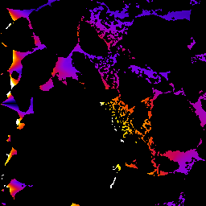

This plugin creates 2D and 3D geodesic distance maps by ordered propagation. See the DistanceMapLib page for more information.
Geodesic Map Dialog
Geodesic Distance operates on 2D and 3D images that have been "binarized" into "zero" and "non-zero" components.
Select "Map 0" or "Map !0" to select the component to map.
The "Output" pull down menu provides several options:
3D new Image - creates a 3D GDT new output stack.
3D in Place - converts the current stack to a 32-bit 3D GDT
2D new Image - creates a new stack of 32-bit 2D GDTs
2D in Place - converts the current stack to a new stack of 32-bit 2D GDTs
2D this slice new image - creates a 2D GDT of the current slice
Check the "Use Pixel Sizes" to map in physical pixel size units. The default is unit pixels.
The "Seed" pull down menu provides several options for the source points:
Left Slice - the GDT seed points are the entire left side of the 3D volume
Right Slice -
Top Slice -
Bottom Slice -
Front Slice -
Back Slice -
Point(s) - Use the ImageJ Roi Point tool to define one or more GDT source points.
Select Geodesic Distance or Tortuosity radio button.
For tortuosity from a volume surface, the tortuosity is the GDT distance from the surface divided by the straight line distance from the surface.
For tortuosity from Point(s) sources,the tortuosity is the GDT distance from the nearest source point divided by the straight line distance from the nearest source point.
Note that the tortuosity using the "Point(s)" option is relatively slow.
Click OK to begin processing.
Binarized Image(left), Geodesic Map Dialog(center), resulting GDT from left slice(right)

Tortuosity 1(dark blue) to 1.75(white)
Tortuosity Visualization made with Volume Viewer 2.01